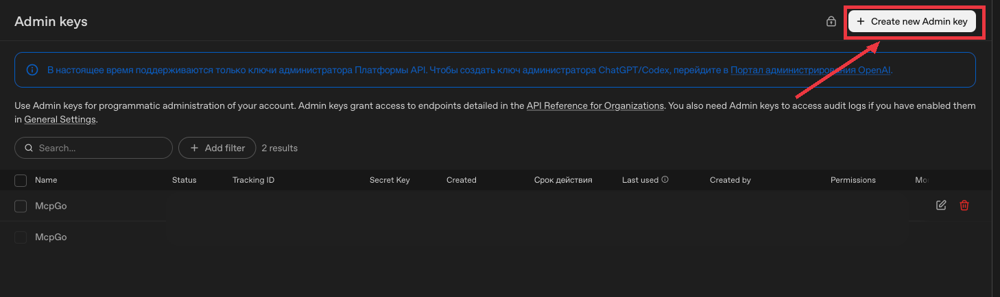
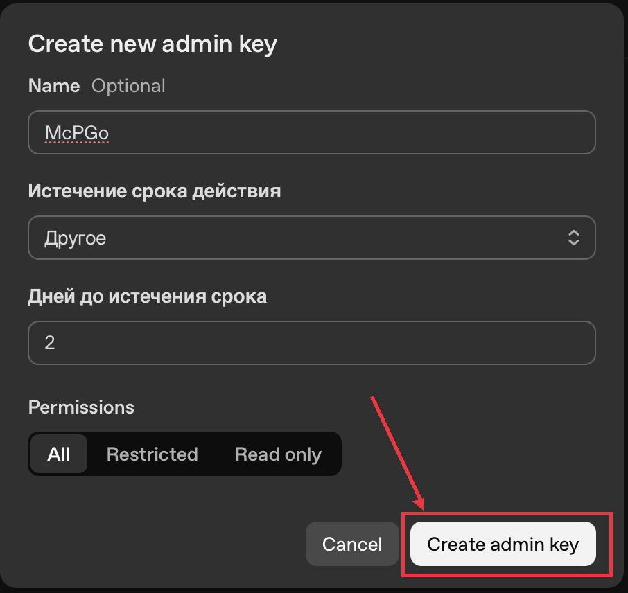
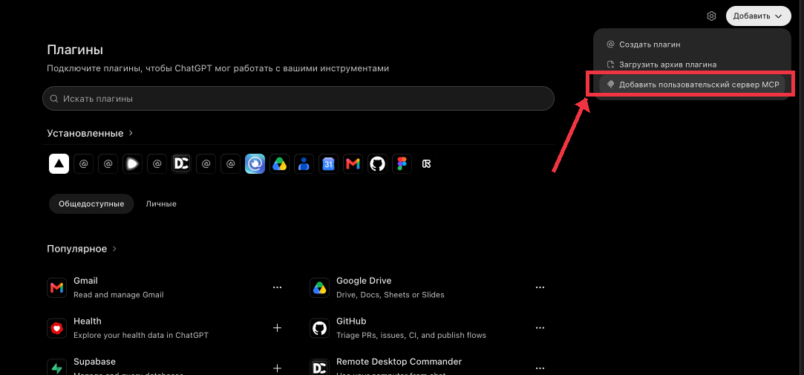
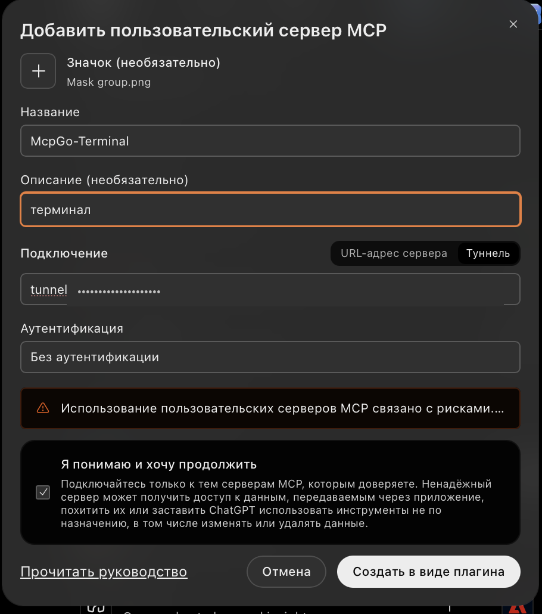
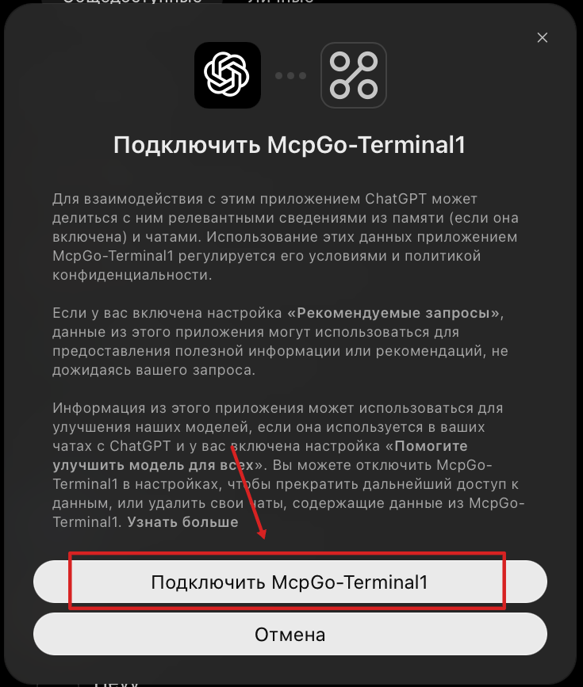

CONTROL CENTER
Сервисы MCP
Управление подключениями ChatGPT на этом компьютере
Терминал
Локальный MCP · PowerShell и задачи Windows
Проверяем соединение…
Playwright
Chrome / Edge · Browser MCP
Проверяем соединение…
Здоровье McpGo · MCP-06
Последняя проверка и следующее безопасное действие. Остановка по команде владельца не считается ошибкой.
Состояние компонентов пока не подтверждено.
Последние изменения соединения
Нет событий
Фоновые службы
Безопасный терминал
terminalhub-operations/SKILL.mdВыберите навык, чтобы просмотреть инструкцию.
4 локальных навыка · Без автоматического выполнения команд
Обновления
Проверка без автоматической установкиУстановщик неподписан. Перед запуском проверяйте SHA-256 из GitHub Releases.
Мастер первого подключения
Шаг 1 из 71. Проверяем Windows
Убедимся, что всё готово к подключению ChatGPT.
2. Подключаем OpenAI
Не нужно разбираться с API заранее. Выбери свой сценарий — мастер покажет, где взять нужные данные.
Понадобится доступ к OpenAI Platform. Это отдельный кабинет, не окно ChatGPT.
Для создания туннелей нужны права Tunnels: Read + Manage. Административный ключ не сохраняется.
Как создать Admin API Key — инструкция со скриншотами
1. В разделе Admin keys нажми «Create new Admin key».

2. Введи название McpGo, выбери срок действия и разрешения. Нажми «Create admin key».

Скопируй ключ сразу. Не отправляй его в чат.
Скопируй два разных Tunnel ID и продолжи.
3. Подключаем туннели
Для терминала и браузера нужны два отдельных Secure MCP Tunnel.
Подключить указанные туннели
Ключу нужны Tunnels: Read + Use. Не используй административный ключ.
4. Службы Windows
Только пользовательские службы, без прав администратора. Проверяются конфликты портов и принадлежность каждой службы.
Другие установки McpGo не перезаписываются и не останавливаются.
5. Личный Chrome
1. Установи официальное расширение Playwright в Chrome
Без этого шага Browser MCP и AutoSend не смогут управлять браузером.
2. Скопируй токен из расширения
Нажми значок Playwright Extension → Manage clients → скопируй PLAYWRIGHT_MCP_EXTENSION_TOKEN. Не отправляй токен в чат.
3. Проверь доступ и включи Browser MCP
6. Подключение в ChatGPT
Добавь два персональных MCP-плагина — отдельно для терминала и браузера.
ChatGPT создаёт подключения на сайте. McpGo не получает доступ к твоему аккаунту ChatGPT.
- На странице плагинов нажми «Добавить» (справа сверху).
- Выбери «Добавить пользовательский сервер MCP».
- Укажи имя плагина и в разделе «Подключение» выбери «Туннель».
- Выбери нужный туннель из списка или вставь Tunnel ID ниже.
- Выбери «Без аутентификации», подтверди предупреждение и нажми «Создать в виде плагина».
- ChatGPT автоматически откроет окно «Подключить». Нажми кнопку подключения — искать плагин в «Личные» не нужно.
Как добавить MCP-плагин — инструкция со скриншотами
1–2. На странице ChatGPT Plugins нажми «Добавить» → «Добавить пользовательский сервер MCP».

3–5. Заполни форму создания MCP-сервера.

После создания: автоматическое подключение
После «Создать в виде плагина» ChatGPT автоматически предложит подключить новый McpGo-Terminal.

Нажми «Подключить» в появившемся окне.
Создай два отдельных подключения
McpGo Terminal · Терминал—McpGo Browser · Chrome / Playwright—Прямой ссылки для открытия формы добавления MCP-сервера у ChatGPT нет: меню «Добавить» нужно нажать вручную. Если туннель не появляется в списке, проверь выбранный ChatGPT Workspace и права Tunnels Read + Use.
Terminal выполняет команды с правами пользователя Windows. Browser может работать в уже авторизованных вкладках.
7. Проверка готовности
Только безопасные read-only MCP-вызовы.
Локальный MCP, работающий туннель и вызов из ChatGPT — три разные проверки. Мастер не объявляет полное подключение по одному открытому порту.
Вставь скопированный тест в подключённый разговор ChatGPT. Если не работает — проверь права и workspace.
Эта кнопка только скрывает мастер при следующем запуске. Доступность ChatGPT остаётся неподтверждённой.
Второе действие создаст отдельный проект McpGo и сервисный аккаунт с минимальными разрешениями.
Подключение MCP
Ключи шифруются средствами WindowsСоздайте два Secure MCP Tunnels в ChatGPT и укажите идентификаторы и ключи. McpGo не передаёт ключи сторонним серверам.
Автопродолжение проектов
Укажи проект и ссылку на его чат. Новое задание сохранится выключенным. Кнопка «Запустить» проверит вкладку и только потом поставит первое сообщение в очередь.
Обмен между агентами
Сообщение агенту
Загрузка...